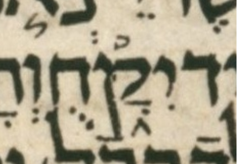

| bcv (tanach.us) | 2k20:18 |
| MPK | יִקָּ֑חֻ |
| qere | יִקָּ֑חוּ |
| at issue | וּ |
| at issue English | changed a qubuts to a shuruq |
| folio col line | 217A 1 10 |
The qubuts in the MPK becomes a shuruq dot in the qere.
The dagesh in the qof is way off center, but still legit IMO.